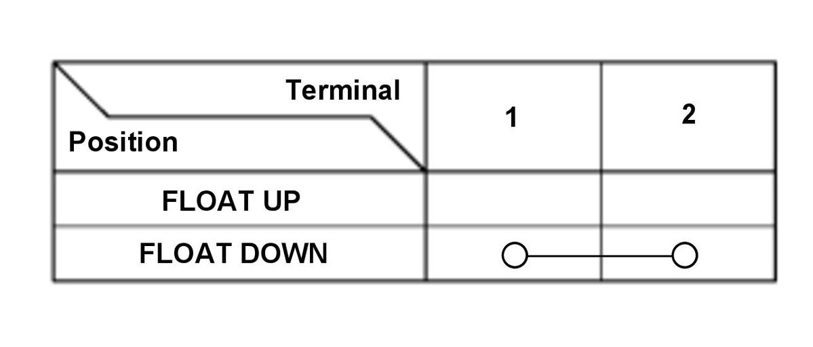

 Courtesy of HONDA, U.S.A., INC.HONDA, U.S.A., INC.
Courtesy of HONDA, U.S.A., INC.HONDA, U.S.A., INC.
|
1. Check the washer fluid level switch (A) according to the table. 2. If the continuity is not as specified, replace the washer fluid level switch.
|